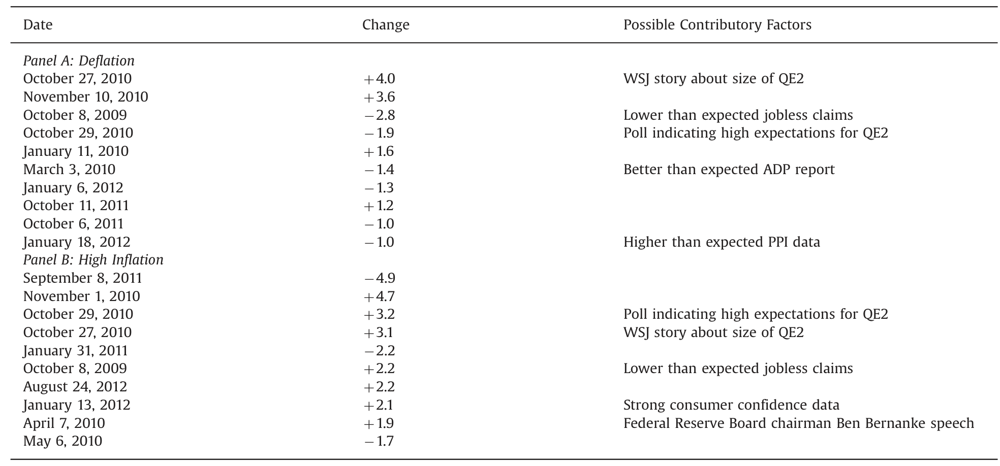
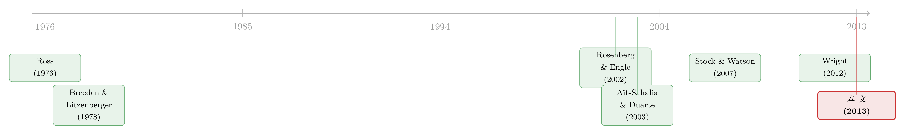

市场怕的不是通胀，而是通胀的两端
本文读的是 Kitsul & Wright (2013, Journal of Financial Economics)：美国新出现的「通胀上下限期权」市场，让我们能把一整张通胀的概率分布从期权价格里读出来。作者发现，这张分布在两端（通缩与高通胀）的质量，远高于时间序列模型该有的水平——把它和「现实会怎样」相除，得到一个 U 形的经验定价核：投资者在通缩与高通胀两种世界里，边际效用都很高。换句话说，市场真正害怕的，不是通胀本身，而是通胀走向任何一个极端。
1 一个被「平均值」掩盖的问题
先讲一个央行的烦恼。
一家盯着 2% 通胀目标的央行，最在意的是什么？教科书会告诉你：是预期通胀。于是人们盯着 盈亏平衡通胀率 (breakeven inflation)——通胀保值国债 (Treasury Inflation Protected Securities, TIPS) 与同期限名义国债的收益率之差——把它当成投资者通胀预期的实时读数；后来又有了场外的 通胀互换 (inflation swaps)，固定端利率在风险中性下就等于合约期内的预期通胀。
可是 Kitsul 和 Wright 一上来就提醒你：预期通胀这个「平均值」，掩盖了一个更要命的问题。设想两种世界——一种里，所有人都笃信通胀会牢牢钉在 2%；另一种里，人们认为通胀要么是 −2%、要么是 +6%，各占一半。这两种世界的预期通胀完全一样，但对央行而言，前者天下太平，后者却是噩梦。一个盯通胀的央行，被建模为对通胀有二次损失函数（Woodford, 2003），它同时在乎均值和方差，甚至在乎更高阶的形状——尤其是通缩那条尾巴，因为通缩被认为有特别危险的动力学（Reifschneider & Williams, 2000）。
所以真正想要的，不是一个预期值，而是一整张通胀的概率密度函数 (probability density function, pdf)。
问题是，TIPS 和通胀互换都只给你均值。怎么把整张分布拿出来？
2 一个新市场，恰好给了答案
接着，一个自然的转折出现了：金融危机之后，美国冒出了一个新市场——通胀上下限期权 (inflation caps and floors)，其收益直接挂钩实现的 CPI 通胀率。
它们的结构很干净。一份零息 通胀上限 (cap)，卖方承诺在 \(n\) 年后支付
$$\max\big((1+\pi^{(n)})^n - (1+k)^n,\; 0\big)$$
其中 \(\pi^{(n)}\) 是 \(t\) 到 \(t+n\) 的年均 CPI 通胀率，\(k\) 是行权价。这本质上就是一份写在通胀上的看涨期权：通胀越过 \(k\) 才有支付。通胀下限 (floor) 则相反，支付 \(\max((1+k)^n-(1+\pi^{(n)})^n,0)\)，是一份看跌期权。
一份「通胀下限」的本质，就是一张通缩保单——通胀掉到 \(k\) 以下，它才赔钱给你。PIMCO 这样的机构正是在大量卖出通胀下限（Weiss, 2010）。
这个市场有多大？据交易商口径，2011 年交易商间市场约成交了 $22 billion 名义本金，比 2010 年增长约 200%。和国债市场比这是九牛一毛，流动性排序大致是：名义国债 > TIPS > 通胀互换 > 上下限期权，这个新市场仍在襁褓里。但作者借用了 Wolfers & Zitzewitz (2004) 的「预测市场」逻辑：哪怕赌注不大，价格也会反映参与者的信念——更何况这里的成交量，比实验室博弈和预测市场都大得多。
3 怎样把分布「读」出来：Breeden–Litzenberger 的老把戏
但真正关键的一步，是怎么把这堆不同行权价上的期权报价，翻译成一张连续的概率分布。
这里用的是一个经典结论：看涨期权价格对行权价的二阶导数，正比于标的的风险中性密度（Ross, 1976；Breeden & Litzenberger, 1978）。直觉上，一个「数字期权」——只在通胀恰好落在某个小区间才赔 1 元——可以用相邻行权价的期权头寸合成出来，而它的价格就是该区间的状态价格，也就是（贴现后的）概率。
作者要解的定价方程是（论文式 (1)）：
这里有个技术细节值得点一句：作者用的不是通常的 风险中性测度 (risk-neutral measure)，而是 远期鞅测度 (forward martingale measure) \(Q_n\)。区别在于贴现——前者用未来的短期无风险利率，后者直接用 \(n\) 年期零息债。好处是 \(n\) 年期收益率在 \(t\) 时刻就已知，可以干脆利落地提到期望算子外面。
有了式 (1)，密度就来自二阶导：
$$f^{Q_n}_t(\pi)\;\propto\;\frac{\partial^2 P_t(k,n)}{\partial k^2}.$$
直接对离散报价求二阶差分会噪声爆炸，所以作者先把报价过滤到满足斜率与凸性约束（无套利），再沿 Li & Zhao (2009) 的路子，用 Aït-Sahalia & Duarte (2003) 的局部多项式回归 (local polynomial regression) 在每个行权价邻域拟合一条局部线性的价格函数，二阶导由拟合系数 \(\hat\beta'_1(k)\) 给出。结合 Gürkaynak, Sack & Wright (2007) 的国债收益率曲线贴现，就得到了远期测度下、单日、单一期限的通胀 pdf。
（把概率从期权价格里「读」出来，本身就是一门讲究无套利约束的手艺——关于这一点，可参见《把未来的概率从期权价格里"读"出来：一个被忽略的无套利约束》。）
数据上，作者拿到 BGC Partners 提供的逐日指示性报价：cap 的行权价 1%–6%、floor 的行权价 −2%–3%，均以 0.5% 递增；期限有 1、3、5、7、10 年；样本期 2009-10-06 到 2013-04-01。样本很短，但恰好是美国经济金融极不平静的几年。
4 什么在推动这张分布
然后，一个自然的问题是：这张分布每天在动，到底是被什么推动的？
作者做了一个事件研究 (event study)：把通胀 pdf 隐含的「通缩概率」（定义为通胀低于 0）或「高通胀概率」（定义为通胀高于 4%）的日度变化，回到九个主要宏观数据惊奇上：
$$\Delta p_{k,n,t} = \sum_{j=1}^{J}\beta_j\,s_{jt} + \varepsilon_t,$$
其中 \(s_{jt}\) 是第 \(j\) 类公告的惊奇成分（实际值减去 Money Market Services 调查的预期中位数）。在一个数据公告的小窗口里，公告几乎压倒一切其他信息，这让「惊奇 → 价格变化」的回归近似一次自然实验（思路同 Andersen, Bollerslev, Diebold & Vega, 2003）。
结果很有看头。以 1 年期通缩概率为例，CPI 惊奇的系数是 −4.22（稳健标准误 2.40，10% 显著）：CPI 比预期高出整整一个百分点（一个很大的惊奇），未来 12 个月通缩概率就下降 4.22 个百分点。这其实是机械的——上下限期权就是写在 CPI 上的。在更长期限上，新屋销售、营建许可、非农就业、PPI 等「需求走强」的惊奇，都会显著压低通缩概率；对称地，它们多数会抬高高通胀概率。
但最耐人寻味的反转在这里：FOMC 的惊奇，对通缩或高通胀概率都没有任何统计上显著的影响。非常规货币政策本来宣称的一条传导渠道，就是降低通缩风险；可在这套「用国债期货构造 FOMC 惊奇、再看衍生品隐含概率」的框架里，这个效应根本没出现。作者的解释是：零利率下界期间，货币政策预期更多被官员讲话和媒体讨论塑造，而非 FOMC 当日公告——比如 LSAP-2（QE2）的预期是在 2010 年秋天慢慢被定价进去的，等到 11 月 3 日真正官宣那天，pdf 几乎纹丝不动。
（把单次会议的风险与预期从期权价格里解出来，是一条独立的研究线，见《把"这一次会议"的恐惧，从期权价格里解出来》。）
作者还把通缩或高通胀概率在十年期上变动最大的十天列了出来，回头到 Wrightson ICAP 的市场摘要里找新闻解释——有些天能对上（如 2010 年 10 月围绕 LSAP-2 规模的猜测），但大多数剧烈变动的日子，根本找不到哪怕半个像样的公共消息。这正呼应了一个长期之谜：新闻只能解释资产价格变动的一小部分，最大的价格波动常常发生在没有任何明显公共信息的时候（Fair, 2002）。

Table 4: lists the days of the ten biggest absolute
5 真正的反转：从「会怎样」到「定价核」
到这里，我们手里只有风险中性（远期测度）下的分布。可正如作者反复提醒的：这些 pdf 是在风险中性假设下算的，它混合了「投资者真正相信通胀会怎样」和「投资者对各种通胀状态的厌恶程度」两样东西。要把它们拆开，需要一座桥。
这座桥，就是这篇论文的真正贡献。
作者另起一摊，用时间序列模型为通胀拟合一个 物理测度 (physical measure) 下的密度预测 \(f^P\)——即在真实世界里、不掺任何风险偏好，通胀「实际上」会怎么分布。然后套用 Rosenberg & Engle (2002) 的方法，把同一通胀维度上的两张密度相除，得到 经验定价核 (empirical pricing kernel)：
$$m\big(\pi^{(n)}\big)\;\propto\;\frac{f^{Q_n}\big(\pi^{(n)}\big)}{f^{P}\big(\pi^{(n)}\big)}.$$
这个比值的含义很朴素：在某个通胀状态下，如果期权隐含的密度比物理密度高得多，说明投资者愿意为「在这个状态下能拿到钱」付出超额的价格——也就是说，他们在那个状态下的边际效用 (marginal utility) 很高。
结果是全文的点睛之笔：期权隐含的密度，在通缩和高通胀这两端，都比时间序列模型该给的质量大得多。两端被抬高、相除之后，定价核呈现一条 U 形——投资者在通缩与高通胀两种世界里边际效用都很高，对两条尾巴都愿意花钱买保险。
这和我们对消费 CAPM 的直觉颇为不同。通常我们以为坏状态只有一个方向（衰退、通缩）；但通胀这件事上，投资者怕的是走极端本身——无论是螺旋式通缩，还是失控的高通胀，都被定价为「痛苦的世界」。市场怕的不是通胀，而是通胀的两端。
这里要小心一句：从期权里反推「真实信念」或定价核，对方法假设非常敏感。作者自己在 3.1 节用蒙特卡洛提醒，单日单期限的密度提取在小样本下可能有偏，左偏的一部分未必是真实预期。U 形是稳健的定性特征，但具体形状别太当真。
顺带一提，TIPS 其实也内嵌了一份通缩期权（新发债的本金不低于面值），比较在外的五年期 TIPS 与五年前发行、还剩约五年的「陈年」十年期 TIPS，也能反推通缩概率（Wright, 2009）。它和上下限期权给出的通缩概率自 2010 年夏天起几乎完全相关——但 TIPS 只能给你通缩这一个数，而上下限期权给的是一整张分布。这正是作者选择后者的理由。
6 文献脉络
把这条线捋一捋。源头是两篇奠基之作：Ross (1976) 与 Breeden & Litzenberger (1978)，它们说清了「期权价格对行权价的二阶导就是状态价格密度」，为一切「从期权读概率」的工作铺了路。接着，Aït-Sahalia, Wang & Yared (2001) 追问期权市场是否正确地为标的的概率定了价，而 Aït-Sahalia & Duarte (2003) 给出了在形状约束下做非参数期权定价的工具——也就是本文提取 pdf 的引擎。
另一条支流是 Rosenberg & Engle (2002) 的经验定价核：怎样把风险中性密度和物理密度合在一起、反推出投资者的边际效用函数。物理那一侧，则倚仗 Stock & Watson (2007) 这类「为什么美国通胀越来越难预测」的时间序列建模传统。
Kitsul & Wright (2013) 站在这两条支流的交汇处：他们把 Breeden–Litzenberger 的提取术用在一个全新的标的（通胀上下限期权）上，再嫁接 Rosenberg–Engle 的定价核框架，第一次给出了通胀的 U 形经验定价核。和 Wright (2012) 关于零利率下界货币政策的工作一脉相承。

评论与延伸（Q&A + 研究方向）
（a）几个可能的疑问
Q：从期权里读出的 pdf，就是投资者「真正相信」的概率分布吗？
不是。它是远期鞅测度下的密度，混入了风险偏好。要还原到真实信念（物理测度），必须除以定价核——而这恰恰是本文第 4 节做的事。把风险中性密度误当成真实信念，是这类工作最常见的陷阱（参见《把概率从期权价格里"凭空"捞出来——Ross 复原定理的一次实证审判》对复原难度的讨论）。
Q：样本只有 2009–2013 三年多，结论靠得住吗？
样本确实短，作者也直言。但这几年是美国经济金融极度动荡、通缩与高通胀担忧轮番上场的时期，信息含量很高。代价是统计功效有限，且小样本下密度提取可能有偏——作者专门用蒙特卡洛（3.1 节）来诚实地评估这一点。
Q：U 形定价核会不会只是提取方法的假象？
有这个风险。单日单期限的非参数密度在尾部本就难估，左偏的一部分可能来自小样本偏差而非真实预期。作者把它当作稳健的定性结论（两端边际效用都高），而非精确的函数形状——这个分寸感是对的。
Q：FOMC 惊奇没作用，不反直觉吗？
表面反直觉，但有解释。零利率下界期间，用国债期货构造的 FOMC 惊奇本就难以捕捉真正的政策意外；非常规政策预期更多由讲话和媒体塑造，分散在 FOMC 当日之外。LSAP-2 在官宣前已被慢慢定价，官宣当天 pdf 几乎不动，正是「预期已 priced in」的体现。
Q：这么小的市场（$22 亿名义），价格能反映信念吗？
作者用预测市场的逻辑回应（Wolfers & Zitzewitz, 2004）：赌注小不等于价格无信息，何况这里的成交量远大于实验博弈和预测市场，且有 PIMCO、养老金、宏观对冲基金等真金白银的参与者。但流动性溢价仍是悬而未决的担忧。
Q：和 TIPS 内嵌的通缩期权相比，上下限期权强在哪？
两者给出的通缩概率自 2010 年夏天起几乎完全相关，但 TIPS 只能给「通缩与否」一个数，且受票息、流动性、CPI 季节性等干扰；上下限期权给的是一整张分布，更干净、更完整。
（b）几个可能的研究问题与提案
-
把这套「双密度相除」搬到信用市场。【经济故事】用信用违约互换 (CDS) 期权或信用指数期权提取利差/违约的风险中性分布，再配一个物理违约模型，反推信用的经验定价核——投资者是不是也对「利差极端走阔」这条尾巴付了超额价格？【可行性】中：CDX/iTraxx 期权数据可得，但物理违约密度的建模争议较大。
-
2021–2022 高通胀的「自然实验」。【经济故事】本文样本里高通胀只是尾部担忧；如今用延伸到 2020s 的样本重做，能检验当年那条被定价的右尾，在通胀真实爆发后是否「兑现」，以及 U 形右臂是否变陡。【可行性】高：BGC/Bloomberg 的上下限期权报价仍在更新，事件研究与定价核都可直接重算。
-
隐含分布里的极端质量，是信念还是流动性溢价？【经济故事】上下限期权市场很薄，尾部行权价（如 0% floor、5% cap）的流动性变化，可能本身就在抬高分布两端的质量。把交易商间成交量/价差作为流动性代理，分离「信念」与「流动性溢价」对 U 形的贡献。【可行性】中：需要逐合约的成交与价差数据，识别上偏向时间序列变异。
-
外资持有人与通胀对冲需求的跨国比较。【经济故事】上下限期权市场最早起于欧元区与英国，不同国别投资者对通胀两端的恐惧或许不同。比较各地隐含分布与定价核，能看出谁更怕通缩、谁更怕高通胀。【可行性】低-中：跨国上下限期权数据稀缺且口径不一。
我的判断
这篇论文最漂亮的地方，是把一个纯方法链条（Breeden–Litzenberger 提取 + Rosenberg–Engle 定价核）干净地嫁接到一个全新的、信息更丰富的标的上，并得出了一个有经济意味、又略反直觉的结论——通胀的 U 形定价核。它给央行和宏观金融研究都提供了超越「预期通胀」的工具：你能直接看到投资者对通缩与高通胀两条尾巴各自的恐惧定价。
对识别，我有两点保留。其一是小样本与薄市场：三年多的样本、年成交仅数十亿美元的市场，尾部密度的估计天然脆弱，U 形的右臂在样本里几乎没被真实的高通胀「检验」过。其二是风险溢价与流动性的纠缠：作者把两端的超额质量归为边际效用，但一个流动性极差、尾部行权价稀疏的市场，价格里混入的流动性溢价很难和真实的风险偏好分开——而这恰是我最想看到后续工作去厘清的。沿着延伸方向 2 和 3，用 2021 年以来的高通胀样本重做，并把流动性显式拆出来，应当能给这条 U 形曲线一个更可信的「体检」。
参考文献
Aït-Sahalia, Y., Duarte, J. (2003). Nonparametric option pricing under shape restrictions. Journal of Econometrics 116, 9–47.
Aït-Sahalia, Y., Wang, Y., Yared, F. (2001). Do options markets correctly price the probabilities of movement of the underlying asset? Journal of Econometrics 102, 67–110.
Andersen, T.G., Bollerslev, T., Diebold, F.X., Vega, C. (2003). Micro effects of macro announcements: real-time price discovery in foreign exchange. American Economic Review 93, 38–62.
Breeden, D.T., Litzenberger, R.H. (1978). Prices of state contingent claims implicit in options prices. Journal of Business 51, 621–651.
Reifschneider, D., Williams, J.C. (2000). Three lessons for monetary policy in a low inflation era. Journal of Money, Credit and Banking 32, 936–966.
Rosenberg, J.V., Engle, R.F. (2002). Empirical pricing kernels. Journal of Financial Economics 64, 341–372.
Ross, S.A. (1976). Options and efficiency. Quarterly Journal of Economics 90, 75–89.
Stock, J.H., Watson, M.W. (2007). Why has US inflation become harder to forecast? Journal of Money, Credit and Banking 39, 3–34.
Wolfers, J., Zitzewitz, E. (2004). Prediction markets. Journal of Economic Perspectives 18, 107–126.
Woodford, M. (2003). Interest and Prices: Foundations of a Theory of Monetary Policy. Princeton University Press, Princeton, NJ.
Wright, J.H. (2012). What does monetary policy do at the zero lower bound? Economic Journal 122, 447–466.